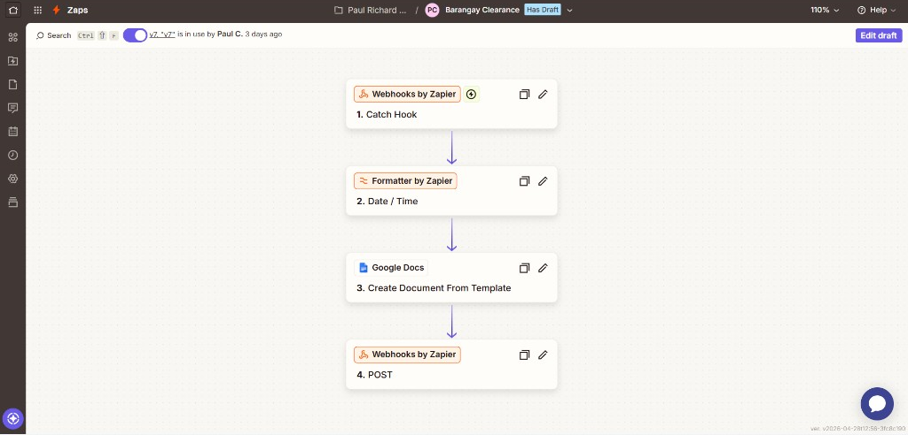
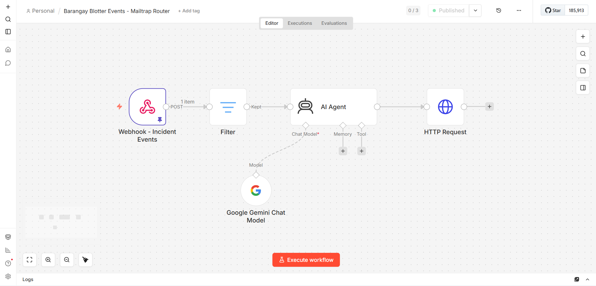
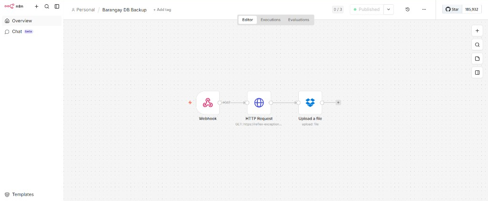

Integration Guidelines
This document describes how the Barangay Management System integrates with external services — covering its architecture, data flows, security controls, and step-by-step workflow explanations for each integration point.
Architecture Overview
The system follows a layered monolith with external service delegation pattern. Laravel handles all business logic and routing. External services are invoked asynchronously through queued jobs and respond through dedicated callback endpoints — keeping the core application decoupled from third-party reliability.
System Components
Each layer has a single responsibility. External services are accessed only through designated service classes, jobs, or controllers — never directly from routes or Blade templates.
Browser Layer
- Livewire 4 components for reactive UI (queues, tables, filters)
- Pusher Echo for WebSocket subscription to user channels
- Chart.js for dashboard analytics rendering
- Vite 8 bundles Tailwind CSS 4 + Alpine.js
Laravel Application
- Controllers — AdminController, ResidentProfileController, DocumentRequestController, IncidentReportController, CommunityEventController + dedicated payment and webhook handlers
- Livewire — IncidentQueue, DocumentQueue, ResidentTable (search, filter, pagination)
- Jobs — SendZapierWebhookJob, SendN8nIncidentWebhookJob (queued, 3 retries)
- Services — ImageStorageService, PortalRealtimeNotificationService, IncidentNotificationService, EventNotificationService
- Scheduler — Daily DB backup trigger via routes/console.php
MySQL Database
- Primary store for all models: User, ResidentProfile, DocumentRequest, IncidentReport, CommunityEvent, EventRegistration, BlotterHearing
- Fallback for sessions and cache if Redis is unavailable
- Full SQL dump exported by DatabaseBackupController for backup
Redis
- Session store —
SESSION_DRIVER=redis - Application cache —
CACHE_STORE=rediswith 30-second TTL on dashboard counts - Queue driver —
QUEUE_CONNECTION=redis; workers process Zapier and n8n jobs
Pusher
- Receives broadcast events from Laravel via the Pusher PHP SDK
- Delivers notifications to subscribed browser clients over WebSocket
- Per-user private channels — channel name includes user ID
- Self-hosted alternative: Laravel Reverb (
BROADCAST_CONNECTION=reverb)
Stripe
- Creates Checkout Sessions for document fees, incident case fees, and event registration fees
- Sends
checkout.session.completedwebhook after successful payment - Refunds processed via Stripe API on document rejection
- No card data ever touches the application server
SMTP / Email
- 16 Mailable classes covering every user-facing event
- Sent synchronously or via queue depending on context
- Mailpit used locally (
host: <LOCAL_SMTP_HOST>, port: 2525) to intercept and preview all emails - Production: any SMTP provider via
MAIL_HOST / MAIL_USERNAME / MAIL_PASSWORD
n8n
- Receives incident status events from
SendN8nIncidentWebhookJob - Passes incident data to an LLM for AI summary generation
- Posts summary back to
POST /api/n8n/incident-summary - Separately: fetches database dump from
GET /api/backup/databaseand uploads ZIP to Dropbox
Zapier
- Receives approved document data from
SendZapierWebhookJob - Populates a Google Docs template with applicant data
- Posts the completed document URL back to
POST /api/zapier/document-ready - Laravel stores the URL on the DocumentRequest and emails the resident
Data Flow Between Systems
Payment Flow (Stripe)
-
1
Resident initiates payment — clicks Pay on a document, incident fee, or event registration.
-
2
Laravel creates Stripe Checkout Session — returns a
checkout_urlwith line items and asuccess_url/cancel_url. -
3
Browser redirects to Stripe-hosted checkout — Stripe collects and processes card data securely.
-
4
Stripe fires
checkout.session.completedwebhook toPOST /stripe/webhook. -
5
StripeWebhookController verifies signature using
STRIPE_WEBHOOK_SECRET, then updates the record status. -
6
Notification dispatched — Pusher broadcasts to resident's channel; confirmation email sent via SMTP.
-
7
Browser shows updated status — Livewire re-renders the queue with the new state.
Document Generation Flow (Zapier)
-
1
Admin approves document request —
AdminController@approveDocumentupdates status toapproved. -
2
SendZapierWebhookJobdispatched to queue — carries full applicant and document data as JSON payload. -
3
Queue worker sends HTTP POST to Zapier Catch Hook — payload includes control number, name, address, purpose, and callback URL.
-
4
Zapier workflow runs — populates a Google Docs template with the applicant's data, generates the official document.
-
5
Zapier calls back to
POST /api/zapier/document-ready— payload containscontrol_numberanddocument_url. -
6
ZapierCallbackControllerstores the URL on the DocumentRequest, then sendsDocumentApprovedMailwith the Google Docs link to the resident.
AI Incident Summary Flow (n8n — Barangay Blotter Events)
-
1
Admin triggers summary — either automatically when an outcome is recorded (
setIncidentOutcome()) or manually via the "Generate Summary" button on the incident detail page. -
2
Laravel POSTs to
Webhook — Incident Eventsnode — payload includesevent: "generate_summary", all incident fields, and acallback_url+callback_secretfor the response. -
3
Filternode checksevent === "generate_summary"— non-matching events (other lifecycle webhooks) are silently dropped; only summaries continue. -
4
AI Agentruns with Google Gemini — a structured prompt is built from the incident fields and sent to Google Gemini Chat Model; output is a 3–5 sentence formal blotter summary in$json.output. -
5
HTTP Requestnode posts back tocallback_url— sendscontrol_number,summary, andcallback_secrettoPOST /api/n8n/incident-summary. -
6
N8nCallbackControllerverifies the secret and stores the result — setsai_summaryandai_summary_generated_aton theIncidentReportmodel.
Database Backup Flow (n8n)
-
1
Trigger — Laravel scheduler fires daily at 02:00 via
routes/console.php, or admin clicks "Backup to Dropbox" on the Maintenance page. -
2
Laravel POSTs to
BACKUP_N8N_WEBHOOK_URL— payload includessource(scheduled / admin_manual) and timestamp. -
3
n8n workflow calls
GET /api/backup/databasewith theX-Backup-Secretheader — Laravel generates a full PDO-based SQL dump, compresses it to ZIP, and streams the file. -
4
n8n uploads the ZIP to Dropbox — file is stored under
barangay-backups/with a timestamped filename.
Scalability Considerations
Stateless Application Layer
Controllers contain no in-process state. Sessions are stored in Redis, not on-server memory — allowing multiple application server instances to serve the same user without sticky sessions.
Horizontal Queue Scaling
Job workers (php artisan queue:work) are stateless and can run on any machine with Redis access. Outbound Zapier and n8n calls are always queued — never blocking an HTTP response.
Cache Layer
Dashboard count queries use Cache::remember('portal.counts.*', 30, ...). A 30-second TTL eliminates repeated COUNT queries on busy admin panels. Cache is invalidated immediately after write operations.
Job Retry and Backoff
Both SendZapierWebhookJob and SendN8nIncidentWebhookJob retry 3 times with 20–30 second backoff. This absorbs transient external service outages without manual intervention.
Idempotency on n8n Incidents
The n8n incident webhook payload includes an idempotency_key (id:eventType:timestamp), allowing n8n to detect and discard duplicate deliveries caused by queue retries.
Real-time Failover
Pusher can be swapped for self-hosted Laravel Reverb by changing BROADCAST_CONNECTION=reverb — no application code changes required. Notification persistence is database-backed regardless of broadcast status.
Security Considerations
Stripe Signature Verification
Every incoming Stripe webhook is verified using STRIPE_WEBHOOK_SECRET and Stripe's HMAC-SHA256 signature scheme. Requests failing verification are rejected before any processing.
Backup Endpoint Secret
The database dump endpoint (GET /api/backup/database) requires an X-Backup-Secret header matching BACKUP_API_SECRET. Without it, the endpoint returns 401.
n8n Callback Verification
n8n posts a callback_secret field in its AI summary callback payload. N8nCallbackController compares it against N8N_WEBHOOK_SECRET before writing to the database.
CSRF Exemption Scope
Only the Stripe webhook route and the two n8n/Zapier callback routes are CSRF-exempt, declared explicitly in bootstrap/app.php. All browser-facing POST routes remain CSRF-protected.
Credentials in Environment
No secrets appear in source code or version control. All API keys, webhook secrets, and database passwords are loaded exclusively from .env, which is listed in .gitignore.
PCI Scope Minimization
Card data never touches the Laravel application. Stripe Checkout is fully hosted by Stripe. The application only receives a session_id and a signed webhook — removing PCI DSS scope from the app server.
Image Upload Safety
All uploads pass through ImageStorageService, which re-encodes files as JPEG using PHP's GD library — stripping any embedded executable payloads or metadata. Output is capped at 2.5 MB.
Admin Middleware Isolation
All admin routes are protected by both auth and a custom admin middleware that verifies is_admin = true. Resident tokens cannot access admin endpoints — returning 403.
Limitations of the Integration Solution
Zapier Callback Has No HMAC Verification
The POST /api/zapier/document-ready endpoint has no shared-secret verification. Any caller knowing the endpoint URL and a valid control_number could inject a fraudulent document URL. Mitigation: add a X-Zapier-Secret header check and validate on the callback controller.
Local Filesystem Image Storage
Resident ID photos, selfies, and incident evidence are stored on the local filesystem (FILESYSTEM_DISK=local). This is not replicated across servers — horizontal scaling requires a shared storage solution such as AWS S3 or Cloudinary.
Full Database Dump Only
The backup system generates a complete SQL dump of all tables on every run. There is no incremental or differential backup. As the database grows, dump time and file size will increase proportionally. A future improvement would be point-in-time recovery or binary log-based incremental backup.
Pusher Availability Dependency
Real-time notifications depend on Pusher's availability. During Pusher outages, no WebSocket events reach the browser — users must refresh to see status changes. Persisted notifications in the database remain accessible, but the real-time experience degrades. Switching to Reverb eliminates this dependency.
No Email Bounce Tracking
The SMTP integration does not include delivery receipts or bounce handling. Failed email delivery is logged as an exception, but no retry or fallback notification channel exists. Consider integrating a transactional email provider (Postmark, Resend) that exposes delivery webhooks.
Zapier Free Plan Task Limits
The Zapier integration runs on a plan with monthly task limits. High document request volumes during peak periods could exhaust the task quota. A self-hosted n8n workflow for document generation would remove this constraint entirely.
Redis Single Point of Failure
Sessions, cache, and queues all share a single Redis instance. If Redis becomes unavailable, the application falls back to database drivers for sessions and cache, causing degraded performance. A Redis Sentinel or Cluster configuration would address this for production deployments.
System Overview
The integration model is webhook-out / callback-in. Laravel dispatches outbound calls through queued jobs and receives responses on dedicated, unauthenticated (or lightly authenticated) callback endpoints. This keeps the core request cycle fast and makes each integration independently replaceable.
| Service | Type | Outbound Trigger | Inbound Callback | Auth Method |
|---|---|---|---|---|
| Stripe | Payment | Checkout Session creation | POST /stripe/webhook |
Signature header |
| Zapier | Automation | SendZapierWebhookJob |
POST /api/zapier/document-ready |
None (control_number only) |
| n8n (Incidents) | AI / Automation | SendN8nIncidentWebhookJob |
POST /api/n8n/incident-summary |
callback_secret field |
| n8n (Backup) | Automation | Scheduler / Admin button | GET /api/backup/database ← n8n pulls |
X-Backup-Secret header |
| Pusher | Realtime | PortalRealtimeNotificationService |
None (push only) | App key / secret |
| SMTP | Mailable classes (16 types) | None (send only) | SMTP credentials | |
| Redis | Infrastructure | Automatic (sessions, cache, queue) | None | Redis password (optional) |
Authentication Instructions
Each integration uses a different authentication method. Below is the setup guide for each.
Stripe
STRIPE_KEY (publishable), STRIPE_SECRET (secret), and STRIPE_WEBHOOK_SECRET (webhook signing secret from the Stripe Dashboard under Webhooks).STRIPE_KEY=pk_test_...
STRIPE_SECRET=sk_test_...
STRIPE_WEBHOOK_SECRET=whsec_...Register the webhook endpoint in Stripe Dashboard, under Developers then Webhooks. Add endpoint: https://<REDACTED_PORTAL_HOST>/stripe/webhook. Listen for checkout.session.completed.
n8n Incident Webhook
N8N_INCIDENT_WEBHOOK_URL=https://<REDACTED_N8N_HOST>/webhook/incident-summary
N8N_WEBHOOK_SECRET=<REDACTED_SHARED_SECRET>The secret is sent outbound in the X-Portal-Webhook-Secret header. n8n must include it as callback_secret in the AI summary callback payload.
n8n Database Backup
BACKUP_N8N_WEBHOOK_URL=https://<REDACTED_N8N_HOST>/webhook/db-backup
BACKUP_API_SECRET=<REDACTED_BACKUP_SECRET>n8n must include X-Backup-Secret: <REDACTED_BACKUP_SECRET> when calling GET /api/backup/database. Without this header the endpoint returns 401.
Zapier
ZAPIER_WEBHOOK_URL=https://<REDACTED_ZAPIER_HOST>/hooks/catch/<REDACTED_HOOK_ID>/No outbound authentication is required beyond the URL. The Zapier callback to /api/zapier/document-ready has no secret — the control_number is used to match the correct DocumentRequest.
Pusher
PUSHER_APP_ID=your_app_id
PUSHER_APP_KEY=your_app_key
PUSHER_APP_SECRET=your_app_secret
PUSHER_APP_CLUSTER=ap1
BROADCAST_CONNECTION=pusher
# Also expose to Vite for the frontend Echo client:
VITE_PUSHER_APP_KEY="${PUSHER_APP_KEY}"
VITE_PUSHER_APP_CLUSTER="${PUSHER_APP_CLUSTER}"Redis
REDIS_HOST=<REDIS_HOST>
REDIS_PORT=6379
REDIS_PASSWORD=null # set if Redis requires auth
SESSION_DRIVER=redis
CACHE_STORE=redis
QUEUE_CONNECTION=redisSMTP / Email
MAIL_MAILER=smtp
MAIL_HOST=<SMTP_HOST>
MAIL_PORT=587
MAIL_USERNAME=<REDACTED_SMTP_USER>
MAIL_PASSWORD=<REDACTED_SMTP_PASSWORD>
MAIL_SCHEME=tls
MAIL_FROM_ADDRESS=no-reply@example.invalid
MAIL_FROM_NAME="Barangay Pickerkarma"For local development, use Mailpit: MAIL_HOST=<LOCAL_SMTP_HOST> MAIL_PORT=2525 MAIL_MAILER=smtp. All outgoing emails are intercepted in the local Mailpit UI.
API Usage Examples
These are the integration-specific endpoints. For general resident/admin API usage, see the API Docs.
Trigger Database Backup (Admin Session)
Requires an active admin browser session (cookie-authenticated). Fires the n8n backup webhook.
POST /admin/backup/trigger
Cookie: laravel_session=...
X-CSRF-TOKEN: ...
# Response: 302 redirect back with flash messageDownload Database Backup Directly (Admin Session)
GET /admin/backup/download
Cookie: laravel_session=...
# Response: application/zip stream
# Filename: barangay-backup-2026-04-28-020000.zipn8n Pulls the Database Dump
GET /api/backup/database
X-Backup-Secret: <REDACTED_BACKUP_SECRET>
# Response: 200 application/zip
# or: 401 {"error":"Unauthorized"}Zapier Posts Completed Document URL (Callback)
POST /api/zapier/document-ready
Content-Type: application/json
{
"control_number": "DOC-2026-00012",
"document_url": "https://docs.example.invalid/document/generated-file"
}
# Response: {"status":"ok","control_number":"DOC-2026-00012"}n8n Posts AI Incident Summary (Callback)
POST /api/n8n/incident-summary
Content-Type: application/json
{
"callback_secret": "<REDACTED_SHARED_SECRET>",
"control_number": "BLT-2026-00003",
"summary": "On April 25, 2026, a complainant filed a noise complaint against a respondent ..."
}
# Response: {"status":"ok"} or {"error":"Unauthorized"}Outbound Incident Webhook Payload (Laravel to n8n)
POST {N8N_INCIDENT_WEBHOOK_URL}
X-Portal-Webhook-Secret: {N8N_WEBHOOK_SECRET}
Content-Type: application/json
{
"event_type": "outcome_recorded",
"idempotency_key": "42:outcome_recorded:1745798400",
"control_number": "BLT-2026-00003",
"incident_category": "Disturbance / Noise Complaint",
"incident_date": "2026-04-25",
"incident_location": "Purok 4, Barangay Pickerkarma",
"incident_narrative": "Loud music playing past midnight...",
"respondent": { "name": "Respondent Name", "contact": "<REDACTED_CONTACT>" },
"status": "Resolved / Settled",
"resolution_summary": "Both parties agreed to a 10pm curfew.",
"callback_url": "https://<REDACTED_PORTAL_HOST>/api/n8n/incident-summary",
"callback_secret": "<REDACTED_SHARED_SECRET>"
}Stripe Workflow
Setup Checklist
- Create Stripe account and obtain API keys from the Dashboard.
- Add webhook endpoint in Dashboard, under Developers then Webhooks:
POST /stripe/webhook. - Subscribe to
checkout.session.completedevent only. - Copy the Webhook Signing Secret to
STRIPE_WEBHOOK_SECRET. - Confirm the CSRF exemption for
/stripe/webhookinbootstrap/app.php.
How Payment Metadata Links to Records
When Laravel creates a Checkout Session, it passes metadata to Stripe identifying the record type and ID:
// DocumentRequestController - Stripe session creation
$session = $stripe->checkout->sessions->create([
'payment_method_types' => ['card'],
'line_items' => [[
'price_data' => [
'currency' => 'php',
'unit_amount' => $documentRequest->fee,
'product_data' => ['name' => $documentRequest->typeLabel()],
],
'quantity' => 1,
]],
'metadata' => [
'type' => 'document_request',
'document_request_id'=> $documentRequest->id,
],
'success_url' => route('documents.payment.success') . '?session_id={CHECKOUT_SESSION_ID}',
'cancel_url' => route('documents.payment.cancel'),
'mode' => 'payment',
]);The webhook controller reads metadata.type and metadata.document_request_id to locate and update the correct record.
Testing Stripe Locally
# Install Stripe CLI
stripe listen --forward-to https://<REDACTED_PORTAL_HOST>/stripe/webhook
# Use test card in Stripe Checkout:
Card: 4242 4242 4242 4242
Exp: any future date | CVC: any 3 digitsZapier Workflow
This Zap handles automated document generation for approved barangay clearances. When an admin
approves a document request, Laravel dispatches SendZapierWebhookJob which triggers
this four-step workflow — formatting the date, generating the official document from a Google Docs
template, and posting the download link back to the portal.

1 Webhooks by Zapier — Catch Hook
The entry point. Laravel's SendZapierWebhookJob fires an HTTP POST to this Zapier
webhook URL whenever an admin approves a document request. The full applicant and document data
arrives as JSON in the request body.
Trigger: Webhooks by Zapier
Action: Catch Hook
URL: https://<REDACTED_ZAPIER_HOST>/hooks/catch/<REDACTED_HOOK_ID>/
Incoming payload fields:
control_number, document_type, applicant_name, applicant_email,
applicant_address, purpose, fee, approved_at, approved_by, callback_urlThe approved_at timestamp arrives in UTC ISO 8601 format and needs to be converted to local time before inserting into the document template.
2 Formatter by Zapier — Date / Time
Converts the approved_at timestamp from UTC to Asia/Manila timezone
and formats it as a human-readable date string for the official document.
Action: Formatter by Zapier — Format
Transform: Date/Time Formatting
Input: {{approved_at}} (from Step 1)
From Timezone: UTC
To Timezone: Asia/Manila
To Format: MMMM DD YYYY (e.g. "April 28 2026")DATE_APPROVED template field. Without this step, the document would show a raw ISO timestamp instead of a clean date.
3 Google Docs — Create Document From Template
Creates a new Google Doc by cloning a pre-made Barangay Clearance template stored in Google Drive. Template placeholders are replaced with the applicant's data. The generated document is also exported as PDF.
Action: Google Docs — Create Document From Template
Template: Barangay_Clearance (Google Docs template file)
Folder: Barangay_Pickerkarma (Google Drive output folder)
Document Title:
{{control_number}} - Barangay Clearance
Template Field Mapping:
CONTROL_NUMBER -> {{control_number}} (from Step 1)
FULL_NAME -> {{applicant_name}} (from Step 1)
ADDRESS -> {{applicant_address}} (from Step 1)
PURPOSE -> {{purpose}} (from Step 1)
DATE_APPROVED -> {{formatted_date}} (from Step 2)
Export Format: PDF
The Google Docs template uses placeholder tags like {{CONTROL_NUMBER}} in the document body.
Zapier replaces each tag with the corresponding value from the webhook payload. The output includes
both a Google Docs edit link and a PDF export link.
4 Webhooks by Zapier — POST
The final step sends the generated document's PDF link back to the Laravel portal. The portal
stores the URL on the DocumentRequest record and emails the resident with the
download link.
Action: Webhooks by Zapier — POST
URL: https://<REDACTED_PORTAL_HOST>/api/zapier/document-ready
Payload Type: Form
POST Body:
{
"control_number": "{{control_number}}", (from Step 1)
"document_url": "{{pdf_export_link}}" (from Step 3 — exportLinks.application/pdf)
}
The portal's ZapierCallbackController matches the control_number to the
corresponding DocumentRequest, stores the document_url, and dispatches
DocumentApprovedMail to the resident with the Google Docs link.
Payload Fields Available in Zapier
| Field | Description | Example |
|---|---|---|
control_number | Unique document request ID | DOC-2026-00012 |
document_type | Human-readable type label | Barangay Clearance |
applicant_name | Full name from resident profile | Resident Full Name |
applicant_email | Resident account email | resident@example.invalid |
applicant_address | House, street, purok | 123 Mabini St., Purok 4 |
purpose | Stated purpose of request | Employment requirement |
fee | Amount paid in pesos | 100.00 |
approved_at | ISO 8601 approval timestamp | 2026-04-28T09:15:00+08:00 |
approved_by | Staff member name | Admin User |
callback_url | Where Zapier should POST the result | .../api/zapier/document-ready |
Environment Variable Required
# Laravel .env
ZAPIER_WEBHOOK_URL=https://<REDACTED_ZAPIER_HOST>/hooks/catch/<REDACTED_HOOK_ID>/n8n Workflow — Barangay Blotter AI Summary
This workflow receives incident event data from the Laravel portal, filters for the
generate_summary event, generates a professional AI summary using
Google Gemini, and posts the result back to the portal via callback.

1 Webhook — Incident Events
The entry point. Laravel's SendN8nIncidentWebhookJob POSTs to this URL whenever an incident status changes or a summary is manually requested by the admin.
Method: POST
Path: incident-events
URL: https://<REDACTED_N8N_HOST>/webhook/incident-eventsThe full incident payload arrives in $json.body. The webhook passes all data through to the Filter node before any processing occurs.
2 Filter — Event Type Guard
Laravel sends webhooks for multiple incident lifecycle events (accepted for mediation, scheduled, outcome recorded, closed, etc.). The Filter ensures only generate_summary events proceed to the AI agent — all others are silently dropped.
Condition (strict, case-sensitive):
$json.body.event equals "generate_summary"
Combinator: AND
Result if false: stop execution (item dropped)3 AI Agent — Google Gemini
An n8n AI Agent node with a custom-defined prompt. The language model is connected via the Google Gemini Chat Model sub-node using a Google PaLM API credential.
Prompt Template
You are a barangay records officer in the Philippines. Write a concise,
professional 3–5 sentence summary of the following incident report for
official barangay records.
Case Number: {{ $json.body.control_number }}
Category: {{ $json.body.incident_category }}
Incident Date:{{ $json.body.incident_date }}
Location: {{ $json.body.incident_location }}
Narrative: {{ $json.body.incident_narrative }}
Respondent: {{ $json.body.respondent_name }}
Witness: {{ $json.body.witness_name }}
Current Status:{{ $json.body.status }}
Resolution: {{ $json.body.resolution_summary }}
Write in formal, third-person language. Focus on the facts.
Suitable for an official barangay blotter document.Google Gemini Chat Model (Sub-node)
Node type: @n8n/n8n-nodes-langchain.lmChatGoogleGemini
Credential: Google Gemini (PaLM) API account
Connected: ai_languageModel to AI AgentThe AI Agent output is available as $json.output in the next node — this is the generated summary text.
4 HTTP Request — Post Summary to Portal
After the AI generates the summary, this node posts the result back to the portal's callback URL. The callback URL and secret are passed by Laravel inside the original webhook payload — n8n does not need them hardcoded.
Method: POST
URL: {{ $('Webhook - Incident Events').item.json.body.callback_url }}
Body (JSON):
{
"control_number": "{{ $('Webhook - Incident Events').item.json.body.control_number }}",
"summary": "{{ $json.output }}",
"callback_secret":"{{ $('Webhook - Incident Events').item.json.body.callback_secret }}"
}The portal's N8nCallbackController verifies callback_secret against N8N_WEBHOOK_SECRET, then stores the summary on the IncidentReport model.
Complete Incoming Payload Reference
This is the exact JSON body Laravel sends when triggering a summary. All fields map directly to n8n expressions via $json.body.*.
POST https://<REDACTED_N8N_HOST>/webhook/incident-events
Content-Type: application/json
{
"event": "generate_summary",
"control_number": "BLT-2026-00001",
"incident_category": "Disturbance / Noise Complaint",
"incident_date": "April 25, 2026",
"incident_location": "Purok 1",
"incident_narrative": "Loud music playing past midnight disturbing neighbors...",
"respondent_name": "Respondent Name",
"witness_name": "None",
"status": "Mediation Scheduled",
"resolution_summary": "Not yet recorded",
"staff_notes": "Please arrive before the scheduled meeting",
"callback_url": "https://<REDACTED_PORTAL_HOST>/api/n8n/incident-summary",
"callback_secret": "<REDACTED_SHARED_SECRET>"
}Callback Response the Portal Expects
POST /api/n8n/incident-summary
Content-Type: application/json
{
"control_number": "BLT-2026-00001",
"summary": "On April 25, 2026, a noise complaint was filed...",
"callback_secret": "<REDACTED_SHARED_SECRET>"
}
# Success: {"status":"ok"}
# Fail: {"error":"Unauthorized"} (secret mismatch)Environment Variable Required
# Laravel .env
N8N_INCIDENT_WEBHOOK_URL=https://<REDACTED_N8N_HOST>/webhook/incident-events
N8N_WEBHOOK_SECRET=<REDACTED_SHARED_SECRET>n8n Workflow — Database Backup to Dropbox
This workflow automates daily database backups. When triggered — either by the Laravel scheduler at 02:00 daily or manually by an admin from the Maintenance page — it pulls a full SQL dump from the portal, compresses it, and uploads the ZIP archive to Dropbox for off-site storage.

1 Webhook — Trigger
The entry point. Listens for an HTTP POST request on the /webhook/db-backup path.
Laravel triggers this endpoint in two ways: the daily scheduler (routes/console.php)
and the admin "Backup to Dropbox" button on the Maintenance page.
Node: Webhook
Method: POST
Path: db-backup
URL: https://<REDACTED_N8N_HOST>/webhook/db-backupThe webhook payload from Laravel includes a source field (scheduled or admin_manual) and a timestamp, but these are informational — the workflow proceeds the same regardless of trigger source.
2 HTTP Request — Fetch Database Dump
Calls the portal's backup API endpoint to download a full SQL dump compressed as a ZIP file.
The request includes the X-Backup-Secret header for authentication — without it,
the endpoint returns 401 Unauthorized.
Node: HTTP Request
Method: GET
URL: https://<REDACTED_PORTAL_HOST>/api/backup/database
Headers:
X-Backup-Secret: {BACKUP_API_SECRET}
Response Format: File (binary)
Output: ZIP archive containing full SQL dumpBackupDatabase command generates a PDO-based SQL dump of all tables,
compresses it into a ZIP archive, and streams it as the HTTP response. The dump includes
structure and data for all application tables.
3 Dropbox — Upload a File
Takes the ZIP binary from the previous node and uploads it to a dedicated backup folder in Dropbox. The filename includes a timestamp to prevent overwrites and maintain a full backup history.
Node: Dropbox — Upload a File
Action: Upload File
Input: Binary data from HTTP Request node
Destination Path:
/barangay-backups/{{ $now.format('yyyy-MM-dd_HHmmss') }}-barangay-backup.zip
Example output filename:
2026-04-28_020000-barangay-backup.zip
The Dropbox node uses an OAuth2 credential configured in n8n's credential store.
The barangay-backups/ folder is created automatically on first upload if it doesn't exist.
Workflow Settings
| Setting | Value | Purpose |
|---|---|---|
Timezone | Asia/Manila | Ensures timestamp in filename matches local time |
Binary Mode | Separate | Handles ZIP binary data independently from JSON metadata |
Execution Order | v1 (sequential) | Nodes execute strictly in order — download completes before upload starts |
Environment Variables Required
# Laravel .env
BACKUP_N8N_WEBHOOK_URL=https://<REDACTED_N8N_HOST>/webhook/db-backup
BACKUP_API_SECRET=<REDACTED_BACKUP_SECRET>The BACKUP_API_SECRET value must match the X-Backup-Secret header configured in the n8n HTTP Request node. Both sides must agree on this shared secret.
Pusher Workflow
How Notifications are Dispatched
All notification delivery is centralized through PortalRealtimeNotificationService:
// Notify a single user
PortalRealtimeNotificationService::notifyUser(
userId: $user->id,
title: 'Document approved',
message: 'Your request DOC-2026-00012 has been approved.',
url: route('documents.index'),
level: 'success' // success | warning | error | info
);
// Notify all admins
PortalRealtimeNotificationService::notifyAdmins(
title: 'New incident report',
message: 'BLT-2026-00003 has been submitted.',
url: route('admin.incidents.index'),
level: 'info'
);Frontend Subscription (Laravel Echo)
// resources/js/app.js (Vite-bundled)
import Echo from 'laravel-echo';
import Pusher from 'pusher-js';
window.Echo = new Echo({
broadcaster: 'pusher',
key: import.meta.env.VITE_PUSHER_APP_KEY,
cluster: import.meta.env.VITE_PUSHER_APP_CLUSTER,
forceTLS: true,
});
// Subscribe to user's private channel
window.Echo
.private(`portal.user.${userId}`)
.listen('PortalNotificationSent', (e) => {
// append notification to the UI
});Switching to Laravel Reverb (Self-hosted)
BROADCAST_CONNECTION=reverb
REVERB_APP_KEY=your-reverb-key
REVERB_APP_SECRET=your-reverb-secret
REVERB_APP_ID=your-reverb-id
REVERB_HOST=<REVERB_HOST>
REVERB_PORT=8080
REVERB_SCHEME=http
# Start the Reverb server:
php artisan reverb:startNo application code changes are needed — the broadcast driver is resolved from the environment at runtime.
Redis Workflow
Redis is the low-latency infrastructure layer used by the portal for sessions, cache, and queues. It keeps dashboard reads fast, allows queued jobs to run asynchronously, and supports scalable multi-instance deployments.
How Redis Is Used in the Portal
- Session store — authenticated session data is stored in Redis, not local files.
- Application cache — frequently requested counters and aggregates are cached with short TTL.
- Queue backend — async jobs (Zapier, n8n, notification-related tasks) are pushed to Redis queues.
Runtime Flow
-
1
User request enters Laravel — middleware reads session state from Redis.
-
2
Controller checks cached values — cache hit returns quickly; cache miss computes and stores value with TTL.
-
3
Async work is dispatched — jobs are pushed to Redis queues instead of blocking the HTTP response.
-
4
Queue workers consume jobs —
php artisan queue:work redisprocesses webhook, email, and integration jobs. -
5
Client gets fast response — heavy tasks continue in the background while user-facing request completes.
Environment Configuration
# Core Redis connection
REDIS_HOST=<REDIS_HOST>
REDIS_PORT=6379
REDIS_PASSWORD=null
# Use Redis for state and async workloads
SESSION_DRIVER=redis
CACHE_STORE=redis
QUEUE_CONNECTION=redisLocal Verification Checklist
# 1) Confirm Redis is reachable
php artisan tinker
>>> Illuminate\Support\Facades\Redis::ping()
# 2) Clear stale state before test
php artisan optimize:clear
# 3) Start queue worker backed by Redis
php artisan queue:work redis --tries=3 --sleep=1
# 4) Trigger an action that dispatches a job
# (example: approve a document request or trigger backup webhook)
# 5) Confirm queue worker logs job processing outputallkeys-lru for cache-heavy workloads),
and consider Redis Sentinel/Cluster for high availability.
Email Workflow
Available Mail Templates
| Mailable Class | Trigger | Recipient |
|---|---|---|
ResidentVerifiedMail | Admin approves resident profile | Resident |
ResidentProfileSubmittedMail | Resident submits profile | Resident |
DocumentPaymentConfirmedMail | Stripe webhook confirmed | Resident |
DocumentApprovedMail | Zapier callback returns doc URL | Resident |
DocumentRejectedRefundMail | Admin rejects document | Resident |
IncidentReportSubmittedMail | Resident files new report | Resident |
IncidentAdminNewReportMail | Resident files new report | All Admins |
IncidentRespondentSummonsMail | Admin accepts for mediation | Respondent email |
IncidentMediationScheduledMail | Admin schedules mediation | Resident + Respondent |
IncidentPaymentRequiredMail | Outcome recorded — fee due | Resident |
IncidentPaymentConfirmedMail | Case fee paid | Resident |
IncidentCaseUpdateMail | Status changes | Resident |
EventRegistrationConfirmedMail | Free event registration | Resident |
EventPublishedMail | Admin publishes event | All verified residents |
EventCheckInConfirmedMail | QR check-in successful | Resident |
EventSystemNotificationMail | Event-level admin alerts | Admin |
Local Development — Mailpit
# Run Mailpit (captures all outgoing SMTP on port 2525)
# macOS via Homebrew:
brew install mailpit && mailpit
# Windows via binary: https://mailpit.axllent.org/docs/install/
# .env settings:
MAIL_MAILER=smtp
MAIL_HOST=<LOCAL_SMTP_HOST>
MAIL_PORT=2525
MAIL_FROM_ADDRESS=portal@example.invalid
# View captured emails:
<LOCAL_MAILPIT_UI_URL>